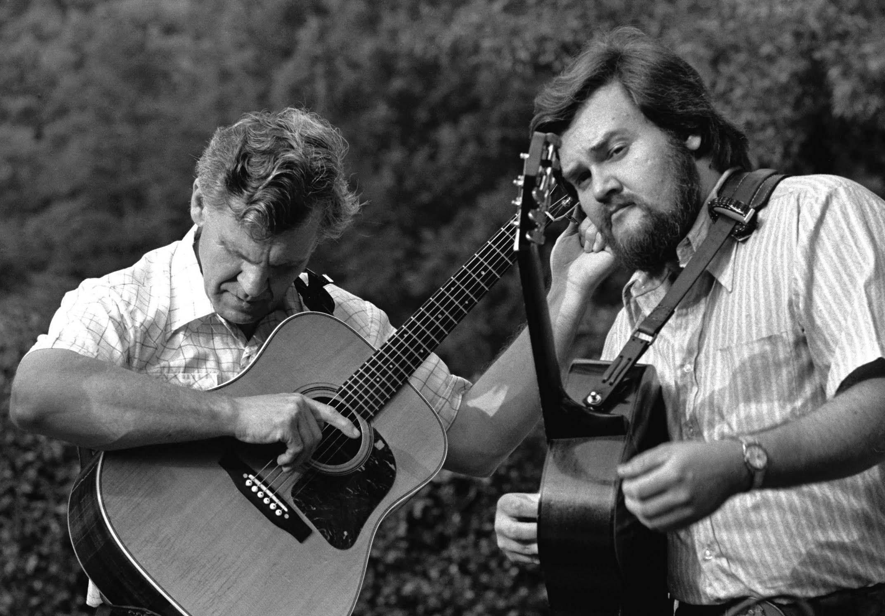

On the Farm
Doc Watson grew up in North Carolina, on a farm with his family. However, it wasn't the way you would normally think. At 2 years old, he developed an eye infection that left him blind in both eyes. His father insisted that he continue working just like his brothers, in hopes he would become strong. Both Doc's parents loved music, and by his dad he began playing guitar from around 8 years old.
His flatpicking style was rather unique for the time. In groups, he would provide the solid foundation which gave a lot of air to the other instruments. This website has a lot of tabs (which are essentially sheet music for guitar) dedicated to preserving Doc's style.

Family Life
Still on his farm in North Carolina, Doc was now married and was raising his son, Merle. Merle picked up the guitar incredibly quickly and their chemistry was obvious. Besides just guitar, they were best friends, and Merle assisted Doc nearly all the time. They were inseperable. In a 1998 interview, Doc states, "He wasn’t only a good son, he was as good a friend as a man will ever have in this world" (Sound Observations, 2020). But on one day, while Merle was doing his routine work his tractor tipped and pinned through him, killing him instantly. This was devastating for everyone and especially Doc. He continued to make music but it was never the same. There is an annual MerleFest concert in his honour.
